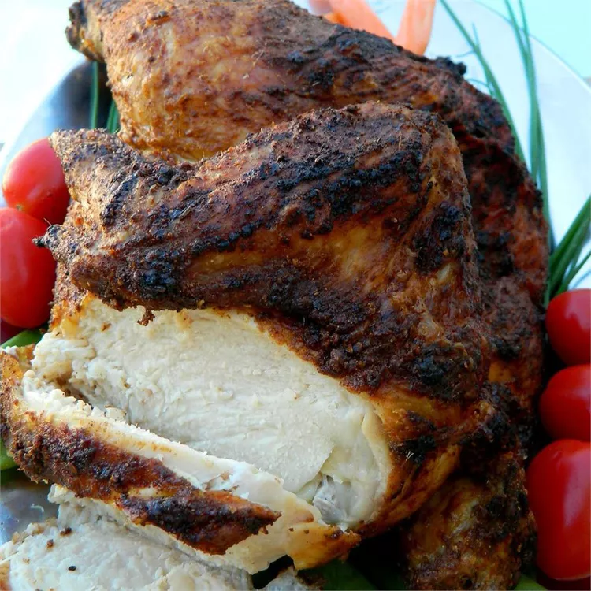

Real Italian Calzones

Description
A calzone is a savory Italian turnover. It traditionally consists of a cheesy filling in a leavened dough and is
served with marinara sauce on the side.
The calzone originated in Naples in the 18th-century.
Ingredients
- 1 (.25 ounce) package active dry yeast
- 1 cup warm water
- 1 tablespoon olive oil
- 1 teaspoon white sugar
- 1 teaspoon salt
- 2 ½ cups all-purpose flour, plus more for dusting
- 1 teaspoon olive oil
Steps
- Make dough: Dissolve yeast in warm water in a mixing bowl; let sit until foamy, about 5 minutes. Add 1
tablespoon oil, sugar, and salt; mix in 1 cup flour until smooth. Gradually stir in remaining flour until
dough is smooth and workable.
- Turn dough out onto a lightly floured surface. Knead dough until it is elastic, about 5 minutes. Place 1
teaspoon olive oil in a large bowl; lay dough in the bowl and flip to coat with oil. Cover and let rise
until almost doubled in size, about 40 minutes.
- Meanwhile, make the filling: Combine Cheddar cheese, ricotta cheese, pepperoni, mushrooms, and basil leaves
in a medium bowl. Mix well, cover, and refrigerate to chill.